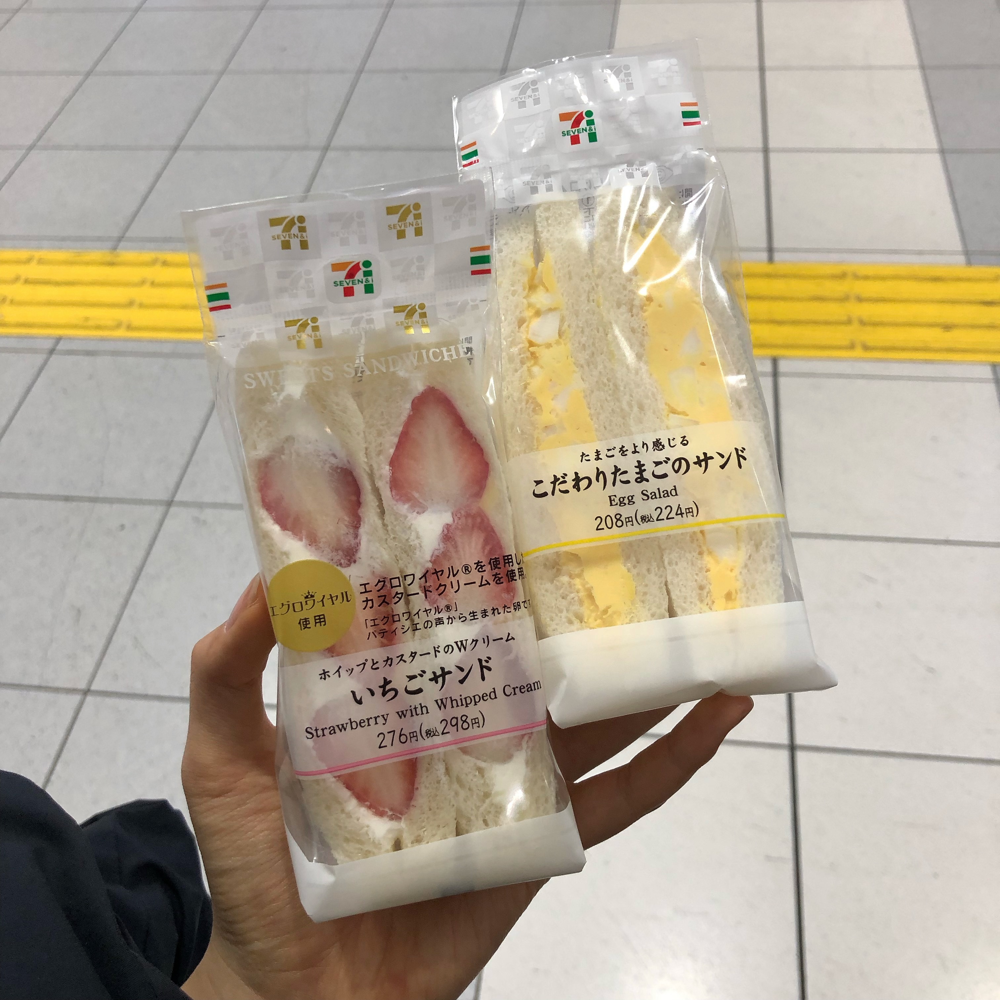
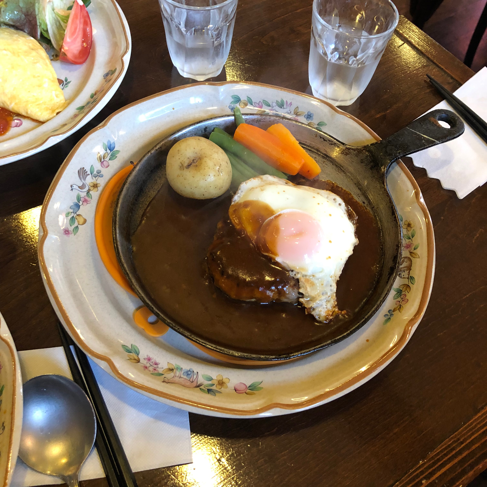
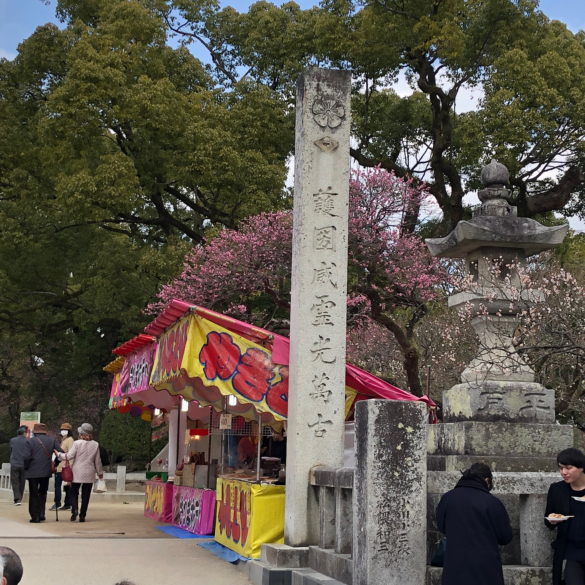

▸ CLICK! Theme song : Fujii kaze - Tabiji *Please open in browser(੭ˊ꒳ˋ)੭ ‣ CLICK! Theme song : Fujii kaze - Tabiji *Please open in browser(੭ˊ꒳ˋ)੭ ▶︎ CLICK! Theme song : Fujii kaze - Tabiji *Please open in browser(੭ˊ꒳ˋ)੭ ▶︎ CLICK! Theme song : Fujii kaze - Tabiji *Please open in browser(੭ˊ꒳ˋ)੭ ▶︎ CLICK! Theme song : Fujii kaze - Tabiji *Please open in browser(੭ˊ꒳ˋ)੭
1
- 인천에서 출발해 순식간에 도착한 후쿠오카!
-
📍 Fukuoka Airport
도쿄나 오사카에 비하면 소박했던 후쿠오카 공항
-
 도착하자마자 들린 세븐. 이른 아침이라선지 도시락도 꽉꽉차있다
도착하자마자 들린 세븐. 이른 아침이라선지 도시락도 꽉꽉차있다
-  간식으로 이치고산도, 타마고산도
- 공항에서 버스만 타면 곧장 하카타 시내로 갈 수 있다
- 기차안타도 되다니 후쿠오카 최고~b
- 2월달이라 발렌타인데이 시즌이였던 일본 스타바
- 곧장 사먹은 스트로베리초코어쩌구.
- 하카타에서 체크인 후, 점심 먹으러 야쿠인 가는 길
-
📍 Yakuin Station
-
📍 Sankakuya
식당 오픈을 기다리며 들린 수예용품점. 산카쿠야
- 도라에몽이 천 비싸지만 탐났다..
-
📍 saEra
함바그와 오믈렛 전문 양식집. 사에라
- 아앗~ 우리가 오픈 첫 손님일줄 알았는데 간발의 차로 먼저 들어가시는 할부지
- 인테리어부터 식기 하나까지 레트로식인게 요리는 더 기대가 되는 분위기다.
- 식전 콘스프
- "우아앙 ㅠㅠ"
-  요리 비주얼에 절로 앓는 소리가 나는.. 얘는 [함바그와 계란후라이]
- 얘는 [베이컨토마토오믈렛] 양도 많아서 배도 부르다
- 얘는 [함바그와 치즈오믈렛] 함바그도 맛있지만 오믈렛이 엄청나게 부드럽던 사에라. 러브다 ♡
-
 밥먹구 로손. 유키미 다이후쿠 신상맛
밥먹구 로손. 유키미 다이후쿠 신상맛
- 이맘 때 신상이였던 샌디치 둘. 로손갈 때마다 메인자리에 자리잡고 있었다
-
📍 Hakata Bus Terminal
다음 행선지는 다자이후. 하카타 버스터미널에서 버스를 타야한다
- 터미널에 있는 '무짱만쥬'
- 후기를 보니 엄청 유명한 타이야끼집인 것 같다. 안먹어본게 아숩
-
📍 Dazaifu
도차쿠. 오는 버스풍경부터 작고 귀엽던 다자이후
- 천만궁으로 올라가는 스트리트. 기념품 상점이나 맛집 카페 등 볼거리가 많다
-
📍 Tenzan
스트리트에 있는 '텐잔' 본점. 텐잔에서 젤 유명한 이치고 모찌
-  궁 주변에는 마츠리마냥 푸드트럭도 많았다
- 크로와상 붕어빵이라니, 크로플의 시초셨군요..
- 비주얼 대박인데..
- 연못지나
- 입궁
- 다자이후 천만궁은 학문의 신을 모시는 신사라 합격이나 학업기원 참배객이 많다고 한다